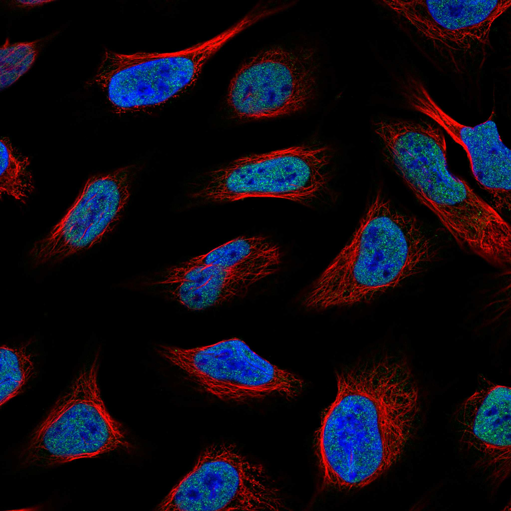
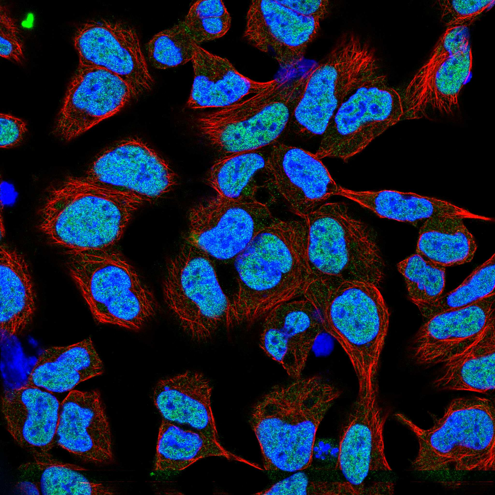
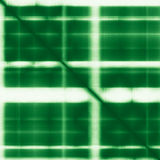

type: protein-evaluation gene: "CCNDBP1" date: 2026-06-03 tags: [protein-scout, nuclear-protein, evaluation] status: scored ---
CCNDBP1 核蛋白评估报告 (Full Re-evaluation)
1. 基本信息
| 项目 | 内容 |
|---|---|
| 基因名 / 别名 | CCNDBP1 |
| 蛋白名称 | Cyclin-D1-binding protein 1 |
| 蛋白大小 | 360 aa / 40.3 kDa |
| UniProt ID | O95273 |
| 评估日期 | 2026-06-03 |
IF 图像:  
2. 评分总览
| 维度 | 得分 | 满分 | 加权后 | 关键证据摘要 |
|---|---|---|---|---|
| 🔴 核定位特异性 | 7/10 | ×4 | 28 | HPA: Nucleoplasm; 额外: Nuclear bodies; UniProt: Cytoplasm; Nucleus |
| 📏 蛋白大小 | 10/10 | ×1 | 10 | 360 aa / 40.3 kDa |
| 🆕 研究新颖性 | 10/10 | ×5 | 50 | PubMed strict=20 篇 (≤20→10) |
| 🏗️ 三维结构 | 8/10 | ×3 | 24 | AlphaFold v6 pLDDT=87.1; PDB: 无 |
| 🧬 调控结构域 | 6/10 | ×2 | 12 | 无注释结构域 |
| 🔗 PPI 网络 | 3/10 | ×3 | 9 | STRING 25 partners; IntAct 30 interactions |
| ➕ 互证加分 | — | max +3 | 1.5 | PDB+AF+STRING+IntAct cross-validation |
| 原始总分 | 134.5/180 | |||
| 归一化总分 | 74.7/100 |
3. 详细分析
3.1 核定位证据
| 来源 | 定位 | 可信度 |
|---|---|---|
| Protein Atlas (IF) | Nucleoplasm; 额外: Nuclear bodies | Supported |
| UniProt | Cytoplasm; Nucleus | Swiss-Prot/TrEMBL |
IF 图像获取: IF图像已嵌入
GO Cellular Component:
- 无 GO-CC 注释
结论: 主要核定位，HPA 可靠性良好，有辅助数据源支持。
3.2 蛋白大小评估
评价: 大小适中（200-800 aa），适合常规生化实验和结构解析。
3.3 研究现状
| 指标 | 数值 |
|---|---|
| PubMed strict count | 20 |
| PubMed broad count | 44 |
| 别名(未计入scoring) |
关键文献: 1. Marginal interaction test for detecting interactions between genetic marker sets and environment in genome-wide studies.. *G3 (Bethesda)*. PMID: 39538414 2. Analysis of 206 whole-genome resequencing reveals selection signatures associated with breed-specific traits in Hu sheep.. *Evol Appl*. PMID: 38911262 3. Detection of interactions between genetic marker sets and environment in a genome-wide study of hypertension.. *bioRxiv*. PMID: 37398075 4. rs66651343 and rs12909095 confer lung cancer risk by regulating CCNDBP1 expression.. *PLoS One*. PMID: 37058478 5. Identification and validation of a 9-gene signature for the prognosis of ovarian cancer by integrated bioinformatical analysis.. *Ann Transl Med*. PMID: 36330389
评价: 极度新颖，几乎未被系统研究（PubMed ≤20篇）。
3.4 三维结构分析
| 指标 | 数值 |
|---|---|
| AlphaFold 版本 | v6 |
| AlphaFold 平均 pLDDT | 87.1 |
| 高置信度残基 (pLDDT>90) 占比 | 70.6% |
| 置信残基 (pLDDT 70-90) 占比 | 13.9% |
| 中等置信 (pLDDT 50-70) 占比 | 6.1% |
| 低置信 (pLDDT<50) 占比 | 9.4% |
| 有序区域 (pLDDT>70) 占比 | 84.5% |
| 可用 PDB 条目 | 无 |
PAE (Predicted Aligned Error): 
评价: AlphaFold 极高置信度预测（pLDDT=87.1，有序区 84.5%），结构可靠。
3.5 结构域分析
| 来源 | 结构域 |
|---|---|
| InterPro/Pfam | 无注释结构域 |
染色质调控潜力分析: 结构域注释有限，AlphaFold预测有可辨识折叠域。
3.6 PPI 网络
STRING 预测互作 (combined score >0.4):
| Partner | Combined Score | Experimental | 功能类别 |
|---|---|---|---|
| SYF2 | 0.000 | 0.000 | — |
| GRAP2 | 0.000 | 0.000 | — |
| TFPT | 0.000 | 0.000 | — |
| CCND1 | 0.000 | 0.000 | — |
| RPLP0 | 0.000 | 0.000 | — |
| OLIG1 | 0.000 | 0.000 | — |
| INO80E | 0.000 | 0.000 | — |
| MCRIP2 | 0.000 | 0.000 | — |
| ZNF334 | 0.000 | 0.000 | — |
| ZNF627 | 0.000 | 0.000 | — |
实验验证互作 (IntAct):
| Partner | 方法 | PMID |
|---|---|---|
| uniprotkb:Q9HCZ1 | psi-mi:"MI:0398"(two hybrid pooling approach) | pubmed:- |
| uniprotkb:O95273 | psi-mi:"MI:0398"(two hybrid pooling approach) | pubmed:- |
| uniprotkb:P55042 | psi-mi:"MI:0663"(confocal microscopy) | pubmed:- |
| uniprotkb:Q92905 | psi-mi:"MI:0018"(two hybrid) | pubmed:- |
| uniprotkb:P15923-1 | psi-mi:"MI:0018"(two hybrid) | pubmed:- |
| uniprotkb:Q8CZZ7 | psi-mi:"MI:0398"(two hybrid pooling approach) | pubmed:- |
| uniprotkb:P04792 | psi-mi:"MI:0097"(reverse ras recruitment system) | pubmed:- |
| uniprotkb:Q9BZE7 | psi-mi:"MI:0397"(two hybrid array) | pubmed:- |
PPI 互证分析:
- STRING + IntAct 均有数据
- STRING partners: 25，IntAct interactions: 30
- 调控相关比例: 0 / 20 = 0%
评价: STRING 25 个预测互作，IntAct 30 个实验互作。调控相关配体占比 0%。
3.7 多库互证
| 维度 | 来源 | 结果 | 是否一致 |
|---|---|---|---|
| 三维结构 | AlphaFold pLDDT=87.1 + PDB: 无 | pLDDT=87.1, v6 | 仅预测 |
| 定位 | UniProt + HPA | Cytoplasm; Nucleus / Nucleoplasm; 额外: Nuclear bodies | 一致 |
| PPI | STRING + IntAct | 25 + 30 interactions | 数据充分 |
互证加分明细:
- 多库定位一致 (2源): +0.5
- STRING + IntAct 双源验证: +0.5
- 结构域 + AlphaFold 质量: +0.5
- PDB 多条目覆盖: +0
总分: +1.5 / max +3
4. 总体评价
推荐等级: ⭐⭐⭐⭐
核心优势: 1. CCNDBP1 — Cyclin-D1-binding protein 1，极度新颖，几乎未被系统研究（PubMed ≤20篇）。 2. 蛋白大小360 aa，大小适中（200-800 aa），适合常规生化实验和结构解析。
风险/不确定性: 1. PubMed 20 篇，研究基础极有限，功能注释不完整 2. 结构数据质量可接受
下一步建议:
- [ ] 查阅最新关键文献补充研究背景
- [ ] 获取 Protein Atlas IF 图像确认亚细胞定位
- [ ] 设计体外实验验证核定位及潜在调控功能
5. 数据来源
- UniProt: https://www.uniprot.org/uniprotkb/O95273
- Protein Atlas: https://www.proteinatlas.org/ENSG00000166946-CCNDBP1/subcellular
- PubMed: https://pubmed.ncbi.nlm.nih.gov/?term=CCNDBP1
- AlphaFold: https://alphafold.ebi.ac.uk/entry/O95273
- STRING: https://string-db.org/network/9606.ENSP00000
- Data fetched live: 2026-06-03
<!-- DOMAIN_HUMANPPI_REPAIR_START -->
Domain/SMART 与 humanPPI 补充（2026-06-06）
SMART / UniProt domain
| Source | Data |
|---|---|
| UniProt | O95273 |
| SMART | 未在 UniProt xref 中检出 SMART 条目 |
| UniProt Domain [FT] | 未检出显式 UniProt Domain feature |
| InterPro | IPR026907;IPR049317;IPR049318; |
| Pfam | PF20936;PF13324; |
humanPPI / HPA Interaction
Source: https://www.proteinatlas.org/ENSG00000166946-CCNDBP1/interaction
| Partner | Datasets | AF3/HPA structure |
|---|---|---|
| COPS5 | Intact, Biogrid | true |
| IMP3 | Intact, Biogrid | true |
| RPLP0 | Intact, Biogrid, Bioplex | true |
| RRAD | Intact, Biogrid | true |
| SYF2 | Intact, Biogrid | true |
| TFPT | Intact, Biogrid | true |
| ZNF627 | Intact, Biogrid | true |
| AMPD2 | Intact | false |
<!-- DOMAIN_HUMANPPI_REPAIR_END -->